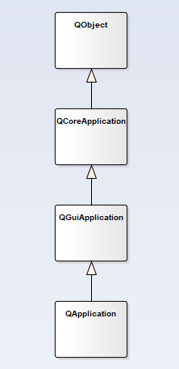
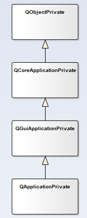
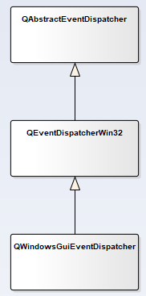

我们在新建一个Qt GUI项目时，main函数里会生成类似下面的代码：
int main(int argc, char *argv[])
{
QApplication application(argc, argv);
CQDialog dialog(NULL);
dialog.show();
return application.exec();
}对应的步骤解释如下
1.构建QApplication对象
2.构建CQDialog主界面
3.主界面显示
4.QApplication对象进入事件循环处理直至退出
上述步骤包含QApplication对象构建过程、主界面显示过程、事件循环处理过程三个主题。
这篇博文主要讲解第一个主题，即QApplication对象构建过程。
QApplication类继承关系如下图所示

查看Qt源码QApplication的构造函数
#ifdef Q_QDOC
QApplication::QApplication(int &argc, char **argv)
#else
QApplication::QApplication(int &argc, char **argv, int _internal)
#endif
: QGuiApplication(*new QApplicationPrivate(argc, argv, _internal))
{
Q_D(QApplication);
d->init();
}QApplication父类QGuiApplication的构造函数
QGuiApplication::QGuiApplication(QGuiApplicationPrivate &p)
: QCoreApplication(p)
{
}可以看到QGuiApplication的构造函数为空内容,进入到QGuiApplication父类QCoreApplication的构造函数
QCoreApplication::QCoreApplication(QCoreApplicationPrivate &p)
#ifdef QT_NO_QOBJECT
: d_ptr(&p)
#else
: QObject(p, 0)
#endif
{
d_func()->q_ptr = this;
// note: it is the subclasses' job to call
// QCoreApplicationPrivate::eventDispatcher->startingUp();
}其也没有实际性的内容。
主要集中在QApplicationPrivate、QGuiApplicationPrivate、QCoreApplicationPrivate类的内部处理，这也是Qt一贯的用法，即信息隐藏。
其类关系图如下

因此函数调用返回到QApplication构造函数中，QApplicationPrivate::init函数被调用用于初始化操作
void QApplicationPrivate::init()
{
#if defined(Q_OS_MACOS)
QMacAutoReleasePool pool;
#endif
QGuiApplicationPrivate::init();
initResources();
qt_is_gui_used = (application_type != QApplicationPrivate::Tty);
process_cmdline();
// Must be called before initialize()
qt_init(this, application_type);
initialize();
eventDispatcher->startingUp();
#ifdef QT_EVAL
extern void qt_gui_eval_init(QCoreApplicationPrivate::Type);
qt_gui_eval_init(application_type);
#endif
#ifndef QT_NO_ACCESSIBILITY
// factory for accessible interfaces for widgets shipped with Qt
QAccessible::installFactory(&qAccessibleFactory);
#endif
}QGuiApplicationPrivate::init会调用QCoreApplicationPrivate::init，QCoreApplicationPrivate::init会进行eventDispatcher的创建，如下代码所示
#ifndef QT_NO_QOBJECT
// use the event dispatcher created by the app programmer (if any)
if (!eventDispatcher)
eventDispatcher = threadData->eventDispatcher.load();
// otherwise we create one
if (!eventDispatcher)
createEventDispatcher();
Q_ASSERT(eventDispatcher);
if (!eventDispatcher->parent()) {
eventDispatcher->moveToThread(threadData->thread);
eventDispatcher->setParent(q);
}
threadData->eventDispatcher = eventDispatcher;
eventDispatcherReady();
#endif基于多态性，QGuiApplicationPrivate::createEventDispatcher被调用
void QGuiApplicationPrivate::createEventDispatcher()
{
Q_ASSERT(!eventDispatcher);
if (platform_integration == 0)
createPlatformIntegration();
// The platform integration should not mess with the event dispatcher
Q_ASSERT(!eventDispatcher);
eventDispatcher = platform_integration->createEventDispatcher();
}createEventDispatcher函数里做两件事情
1.创建平台插件(Windows、Linux)
2.根据平台插件创建eventDispatcher
以我在Windows平台上开发为例
1.创建QWindowsIntegration以及QWindowsGuiEventDispatcher
2.在QWindowsIntegration创建过程中会生成QWindowsContext对象
QEventDispatcherWin32类继承关系如下图所示

因此，QApplication构造时创建了eventDispatcher
关于QApplication对象构建过程就讲述完毕了，后续博文会看到eventDispatcher、QWindowsContext的用途
有部分代码位于qtbase\src\plugins\platforms源码目录